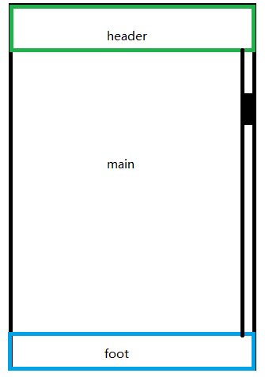
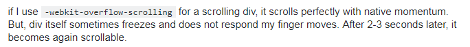
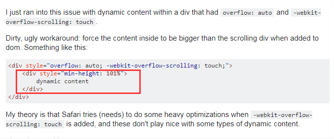
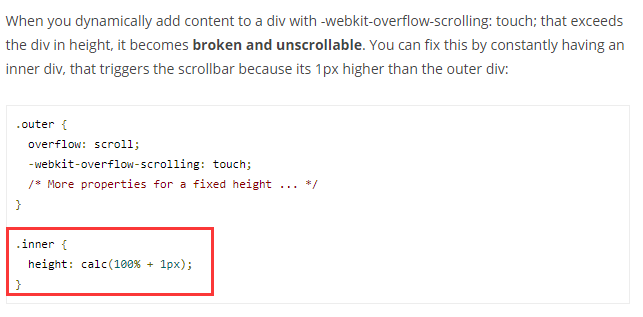

转载自https://www.cnblogs.com/xiahj/p/8036419.html
1. -webkit-overflow-scrolling:touch是什么？
MDN上是这样定义的：
-webkit-overflow-scrolling 属性控制元素在移动设备上是否使用滚动回弹效果. auto: 使用普通滚动, 当手指从触摸屏上移开，滚动会立即停止。 touch: 使用具有回弹效果的滚动, 当手指从触摸屏上移开，内容会继续保持一段时间的滚动效果。继续滚动的速度和持续的时间和滚动手势的强烈程度成正比。同时也会创建一个新的堆栈上下文。
在移动端上，在你用overflow-y:scorll属性的时候，你会发现滚动的效果很木，很慢，这时候可以使用-webkit-overflow-scrolling:touch这个属性，让滚动条产生滚动回弹的效果，就像ios原生的滚动条一样流畅。
2. 解决safari布局抖动的例子

想实现一个布局为header、main、bottom的布局，其中头部和底部通过fixed固定，中间部分通过滚动条滑动
如果目的是实现只要中间的内容超过屏幕高度时，中间内容会自动滚动的效果的话，main部分加上上下的padding，然后不需要自己添加任何滚动条属性，当超出高度时，body会自动产生滚动条。这样我们的目的其实是实现了的。
但是在safari上，当超出高度，页面往下滑时，浏览器底部的工具栏会随着页面一起晃动（向下滚动时会拉起底部工具栏），造成了很不好的体验。所以我们想在中间的main部分加一个独立的滚动条。
2.1 方案一
不过不推荐这个fixed方案，因为页面偶尔卡住不动，下面说到了这个问题
.main {
position: fixed;
top: 50px;
bottom: 50px;
overflow-y: scroll;
}不过不推荐这个fixed方案，因为页面偶尔卡住不动，下面说到了这个问题。
2.2 方案二
���间的main不设定位，高度100%，再padding头部和尾部
其中头部和底部的定位设为absolute会比设为fixed体验更好（况且fix布局在移动端本来就有各种各样的问题，还是尽量避开:) ）。
大致代码如下，仍是 overflow-y 和-webkit-overflow-scrolling，重点在于中间部分依照文本流布局。
html, body {
height: 100%;
}
main {
padding: 50px 0;
height: 100%;
overflow-y: scroll;
-webkit-overflow-scrolling: touch;
}3. 探究-webkit-overflow-scrolling:touch偶尔卡住或不能滑动的bug
-webkit-overflow-scrolling:touch这个属性真的是各种坑，我研究这个属性已经大半年了，还没有发现能够在safari上完美使用无bug的例子。
最常见的例子就是：
- 在safari上，使用了-webkit-overflow-scrolling:touch之后，页面偶尔会卡住不动。
- 在safari上，点击其他区域，再在滚动区域滑动，滚动条无法滚动的bug。
- 通过动态添加内容撑开容器，结果根本不能滑动的bug。
在网上也看到了一些人在问这个问题，不过不多，国外倒是讨论的更多一点，描述如下。

偶尔卡住的问题，解决方案网上众说纷纭，遇到了很多相同的说法，比如如果卡住不动的话，就加一个z-index，就能解决该问题的说法。
在试了很多次之后，这种说法没有一次解决过这个问题。这个说法能够传播出来，可能是使用者当时在使用的时候遇到了-webkit-overflow-scrolling:touch点透或者层级的问题。所以该方案不具有适用性。
所以这个东西真的让我很苦恼了很久，以致于那段时间所有的滚动条不是通过body自己滚动，就是使用iScroll这样的库，繁琐地让我几乎想要放弃移动web，拥抱hybrid，不过在stackoverflow潜水了很久之后，总结了以下几种解决方案：
3.1 保证使用了该属性的元素上没有设置定位
如果出现偶尔卡住不动的情况，那么在使用该属性的元素上不设置定位或者手动设置定位为static
position: static这样会解决部分因为定位(relative、fixed、absolute)导致的页面偶尔不能滚动的bug。
但是滑动到顶部继续手指往下滑，或者到底部继续往上滑，还是会触发卡住的问题（其实是整个页面上下回弹），说他算bug，其实就是ios8以上的特性，如果滚动区域大一点，用户不会觉得这是bug，如果小了，用户会不知道发生了什么而卡住了。 视频在这，有梯子的同学可以看一看https://www.youtube.com/watch?v=MkAVYbO_joo。
3.2 如果添加动态内容页面不能滚动，让子元素height+1
如果在-webkit-overflow-scrolling:touch属性的元素上，想通过动态添加内容来撑开容器，触发滚动，是有bug 的，页面是会卡住不动的。
国内没有人讨论这个问题，国外倒是很多，例如下面的描述：
收集了很多资料，用了之后，下面的方法真正的解决了我的问题，真是直呼神奇，方案如下图：
图一：

图二：

方法就是在webkit-overflow-scrolling:touch属性的下一层子元素上，将height加1%或1px。从而主动触发scrollbar。
main-inner {
min-height: calc(100% + 1px)
}你也可以直接加伪元素上：
main:after {
min-height: calc(100% + 1px)
}这个方案不得不说真的好用。。
当然还有其他方案，不过要写js或者jq了，麻烦。
3.3 为什么会有卡住不动的这个bug
这个bug产生于ios8以上（不十分肯定，但在ios5~7上需要手动使用translateZ(0)打开硬件加速）
Safari对于overflow-scrolling用了原生控件来实现。对于有-webkit-overflow-scrolling的网页，会创建一个UIScrollView，提供子layer给渲染模块使用。
我想说作为一个苦逼的前端只能解决到这了。
4. -webkit-overflow-scrolling:touch的其他坑
除此之外，这个属性还有很多bug，包括且不限于以下几种：
- 滚动中 scrollTop 属性不会变化
- 手势可穿过其他元素触发元素滚动
- 滚动时暂停其他 transition
最后的吐槽
想写这个文章很久了， 本来以为就我有这个问题，结果看到网站上也有很多人在用这个属性，我用safari试了下，都能触发不能滑动的问题，但是网上的文章又很少，不知道大家是不是就视而不见了。
所以目前来看，如果不想那么费心，直接上iScroll或者better-scroll吧，我觉得better-scroll还是挺好用的。如果你喜欢偷懒，那么接着用-webkit-overflow-scrolling:touch也没什么问题。
毕竟移动端的水太深了，你永远不知道下一个问题是发生在safari还是x5内核浏览器上。